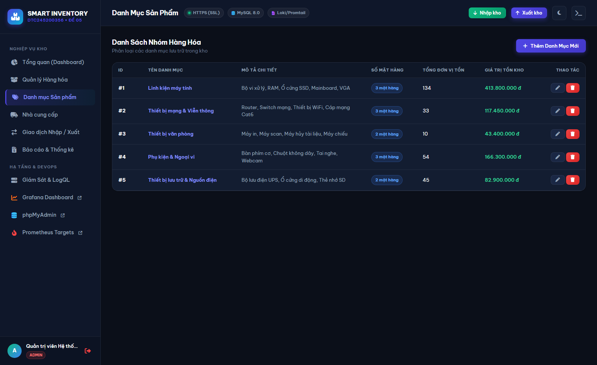
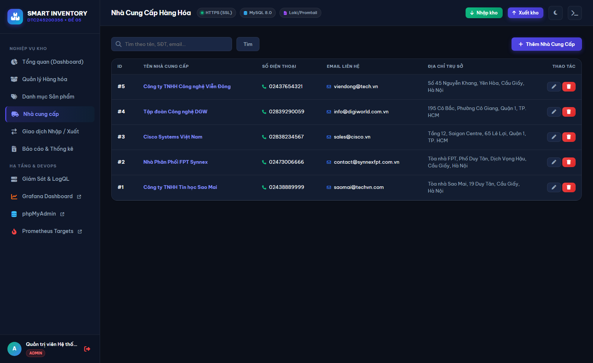
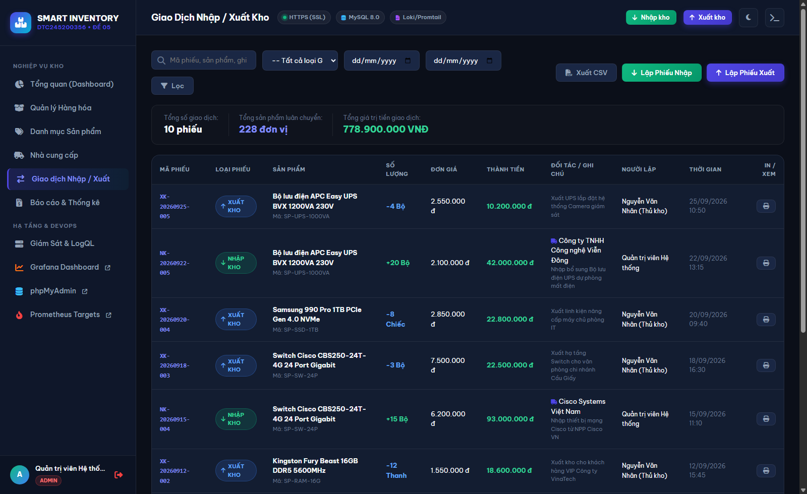
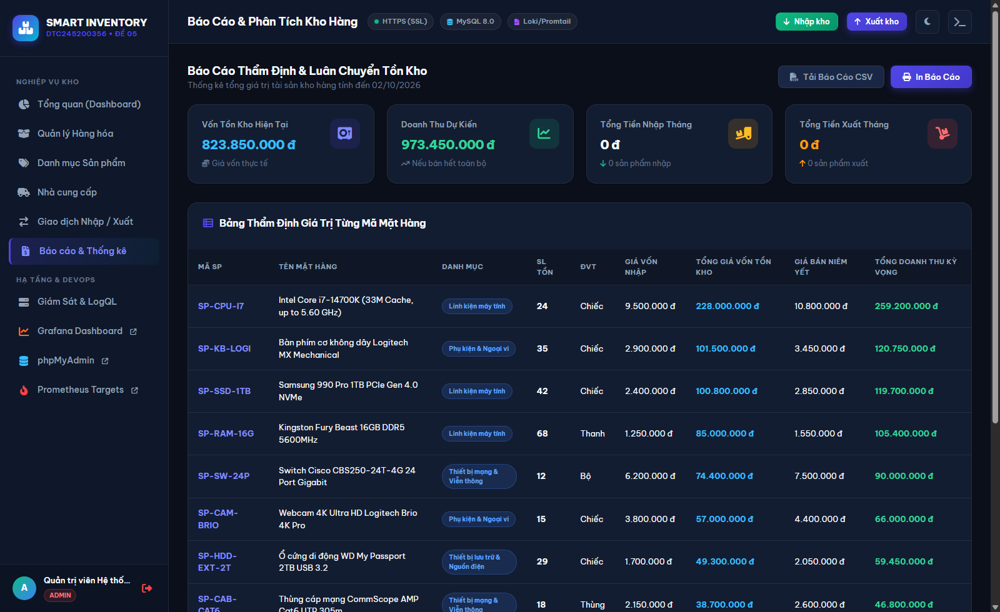

BÁO CÁO BÀI TẬP LỚN / ĐỒ ÁN MÔN HỌC
XÂY DỰNG VÀ TRIỂN KHAI HỆ THỐNG QUẢN LÝ KHO HÀNG (INVENTORY MANAGEMENT SYSTEM)
Đề số: 05
Học phần: Triển khai & Quản trị Hệ thống / DevOps / An toàn Hệ thống
Sinh viên thực hiện: Nguyễn Văn Cường
Mã số sinh viên (MSSV): DTC245200356
Lớp: Hệ Thống Thông Tin K18
Giảng viên hướng dẫn: Giảng viên Bộ môn Mạng & Hệ thống
Thời gian hoàn thành: Năm học 2025 - 2026
MỤC LỤC & DANH MỤC TÓM TẮT
- Chương 1: Mở đầu & Tổng quan Hệ thống
- Chương 2: Cấu trúc Mã nguồn & Quản lý trên GitHub (Yêu cầu 1)
- Chương 3: Triển khai Website Quản lý Kho hàng & Cơ sở dữ liệu MySQL (Yêu cầu 2)
- Chương 4: Cấu hình Nginx Reverse Proxy, Security Headers & SSL (Yêu cầu 3 - Commit 1)
- Chương 5: Giám sát Hệ thống với Prometheus & Grafana (Yêu cầu 4 - Commit 2)
- Chương 6: Quản lý Log Tập trung với Loki & Promtail (Yêu cầu 5 - Commit 3)
- Chương 7: Áp dụng các Biện pháp Gia cố Bảo mật (Hardening) (Yêu cầu 6)
- Chương 8: Kết luận & Hướng phát triển
CHƯƠNG 1: MỞ ĐẦU & TỔNG QUAN HỆ THỐNG
1.1. Đặt vấn đề & Mục tiêu Đề tài
Trong kỷ nguyên số hóa, quản lý chuỗi cung ứng và kho hàng là trái tim vận hành của các doanh nghiệp sản xuất và thương mại điện tử. Quản lý kho hàng thủ công bằng bảng tính thường gặp phải các rủi ro: sai lệch số liệu tồn kho, chậm trễ cập nhật hàng sắp hết, khó kiểm soát trách nhiệm khi có hao hụt và thiếu cái nhìn thời gian thực về dòng tiền luân chuyển hàng hóa.
Đồ án này đặt mục tiêu xây dựng một Hệ thống Quản lý Kho hàng Thông minh (Smart Inventory Management System) toàn diện, không chỉ đáp ứng trọn vẹn nghiệp vụ quản lý kho (Quản lý hàng hóa, Danh mục, Đối tác nhà cung cấp, Nhập/Xuất kho tự động tính tồn, Báo cáo định giá kho và in phiếu kho) mà còn tập trung vào Quy chuẩn Vận hành Hệ thống Hiện đại (DevOps / SRE / An toàn Hệ thống):
1. Đóng gói dịch vụ theo kiến trúc vi dịch vụ container hóa (Docker & Docker Compose).
2. Xây dựng cổng bảo mật tập trung (Nginx Gateway) với chứng chỉ mã hóa SSL/TLS và các HTTP Security Headers ngăn ngừa tấn công phổ biến.
3. Giám sát thời gian thực toàn diện hạ tầng và ứng dụng (Prometheus + Grafana + Exporters).
4. Gom log tập trung và phân tích sự cố với LogQL (Grafana Loki + Promtail).
5. Gia cố bảo mật (Hardening) toàn diện theo tiêu chuẩn CIS Docker Benchmark.
1.2. Kiến trúc Tổng thể Hệ thống
Hệ thống được thiết kế theo mô hình phân tầng đa lớp (Multi-tier Architecture):
- Tầng 1 - Client / User Layer: Trình duyệt người dùng gửi yêu cầu HTTP/HTTPS.
- Tầng 2 - Reverse Proxy Gateway Layer: Nginx đóng vai trò điểm chạm duy nhất từ bên ngoài mạng, xử lý giải mã SSL/TLS, lọc header độc hại, chuyển hướng HTTP -> HTTPS và định tuyến lưu lượng vào các dịch vụ nội bộ tương ứng.
- Tầng 3 - Application & Storage Layer:
- Web Application: Chạy ứng dụng PHP 8.2 trên nền Apache, xử lý toàn bộ logic kho hàng và sinh Structured JSON Logs.
- Database (MySQL 8.0): Chạy độc lập trong subnet mạng backend-net, không mở cổng 3306 ra ngoài.
- phpMyAdmin: Công cụ quản trị CSDL trực quan chạy qua cổng định tuyến /pma/.
- Tầng 4 - Monitoring & Centralized Logging Layer:
- Prometheus: Scrape metrics định kỳ từ MySQL Exporter, Node Exporter và các container.
- Grafana: Giao diện hiển thị Dashboard chỉ số và truy vấn log.
- Promtail: Đọc log từ /var/log/nginx/ và /var/log/app/app.log, gắn nhãn và gửi về Loki.
- Loki: Kho lưu trữ log tối ưu hỗ trợ truy vấn LogQL tốc độ cao.
CHƯƠNG 2: CẤU TRÚC MÃ NGUỒN & QUẢN LÝ TRÊN GITHUB (YÊU CẦU 1)
2.1. Quy chuẩn Quản lý Mã nguồn
Mã nguồn được quản lý phiên bản chuyên nghiệp trên GitHub:
- Tên Repository: cuongcoder123/DTC245200356-QLKH theo đúng mã số sinh viên.
- Quy trình Git Workflow: Phân chia commit tuần tự theo từng mốc yêu cầu của đồ án, mỗi commit mang thông điệp rõ ràng, có thể kiểm chứng tại lịch sử Git log.
2.2. Cấu trúc Thư mục Dự án
DTC245200356-QLKH/
├── docker-compose.yml # File định nghĩa 9 container dịch vụ
├── .env.example # File mẫu cấu hình biến môi trường
├── .env # File biến môi trường thực tế (bảo vệ bí mật)
├── .gitignore # Chặn commit thông tin nhạy cảm
├── README.md # Hướng dẫn khởi chạy và vận hành
├── BAO_CAO_BAI_TAP_LON_HOAN_CHINH.md # Báo cáo chi tiết đồ án
├── mysql/
│ └── init.sql # Script khởi tạo cơ sở dữ liệu và seed data
├── nginx/
│ ├── nginx.conf # Cấu hình chính Nginx & log_format
│ ├── conf.d/
│ │ └── default.conf # Cấu hình HTTPS, Security Headers & Reverse Proxy
│ └── ssl/
│ ├── server.crt # Chứng chỉ SSL X.509
│ └── server.key # Khóa bí mật SSL 2048-bit
├── app/
│ ├── Dockerfile # Đóng gói Web App với non-root user
│ ├── php.ini # Cấu hình an toàn PHP
│ └── src/ # Toàn bộ mã nguồn ứng dụng Web Kho
├── prometheus/
│ └── prometheus.yml # Cấu hình các scrape targets
├── promtail/
│ └── promtail-config.yml # Cấu hình thu thập log file Nginx và App
├── loki/
│ └── loki-config.yml # Cấu hình lưu trữ và index của Loki
└── grafana/
└── provisioning/ # Tự động nạp datasources và dashboards
CHƯƠNG 3: TRIỂN KHAI WEBSITE QUẢN LÝ KHO HÀNG & CƠ SỞ DỮ LIỆU MYSQL (YÊU CẦU 2)
3.1. Thiết kế Cơ sở Dữ liệu MySQL 8.0
Cơ sở dữ liệu inventory_db gồm 6 bảng chuẩn hóa:
1. users: Quản lý tài khoản, mã hóa mật khẩu BCRYPT, phân quyền admin và staff.
2. categories: Danh mục phân loại sản phẩm trong kho.
3. suppliers: Thông tin đối tác, số điện thoại, email, địa chỉ.
4. products: Thông tin sản phẩm, mã SKU, đơn vị tính, giá nhập, giá bán, số lượng tồn, ngưỡng báo động min_stock.
5. inventory_transactions: Ghi nhận lịch sử Nhập kho (IMPORT) và Xuất kho (EXPORT), số lượng, đơn giá, đối tác, ghi chú và người thực hiện.
6. system_logs: Lưu vết nhật ký hoạt động hệ thống nội bộ.
3.2. Chức năng Nghiệp vụ & Giao diện Website Quản lý Kho
Ứng dụng Web được xây dựng hoàn chỉnh với giao diện hiện đại (Dark Theme cao cấp, font chữ Be Vietnam Pro chuẩn tiếng Việt, hiệu ứng kính mờ Glassmorphism) đáp ứng trọn vẹn nghiệp vụ quản lý kho thông minh:
3.2.1. Giao diện Đăng nhập Hệ thống (Authentication & RBAC)
Xác thực an toàn với thuật toán băm mật khẩu BCRYPT, bảo vệ phiên làm việc qua Cookie bảo mật (HttpOnly, SameSite=Lax). Phân quyền người dùng chặt chẽ: Admin (Quản trị viên) và Staff (Thủ kho nghiệp vụ).

3.2.2. Bảng Điều khiển Tổng quan (Dashboard Quản lý Kho)
Cung cấp 4 thẻ KPI động (Tổng SKU: 13, Cảnh báo tồn thấp: 3, Tổng giá trị tồn kho: 823.850.000 VNĐ, Giao dịch tháng), biểu đồ xu hướng Nhập/Xuất 6 tháng, biểu đồ Donut cơ cấu phân bổ vốn tồn kho và bảng cảnh báo hàng sắp hết có nút tạo phiếu nhập nhanh.

3.2.3. Phân hệ Quản lý Hàng hóa (Products Management)
Danh mục toàn bộ SKU sản phẩm: mã hàng, nhóm ngành, đơn vị tính, đơn giá nhập/bán, số lượng tồn kho và ngưỡng báo động min_stock với badge trạng thái trực quan (Còn hàng / Sắp hết). Tích hợp bộ lọc đa chiều và tính năng Xuất CSV đối soát.

3.2.4. Phân hệ Quản lý Nhóm Sản phẩm (Categories)
Phân loại 5 nhóm hàng hóa công nghệ chủ lực. Tự động thống kê số lượng mặt hàng, tổng đơn vị tồn và định giá tổng tài sản cho từng nhóm danh mục.

3.2.5. Phân hệ Quản lý Nhà Cung cấp (Suppliers)
Quản lý danh bạ đối tác cung ứng công nghệ hàng đầu (Sao Mai Tech, FPT Synnex, Cisco Systems Việt Nam, Digiworld, Viễn Đông) với hotline, email và địa chỉ giao dịch.

3.2.6. Phân hệ Giao dịch Nhập / Xuất Kho (Inventory Transactions)
Quản lý toàn diện lịch sử các phiếu Nhập (NK-YYYYMMDD-XXXX) và Xuất (XK-YYYYMMDD-XXXX), tự động cập nhật số lượng tồn kho theo giao dịch ACID của MySQL, kiểm soát số dư tồn kho an toàn và hỗ trợ in phiếu kho chuẩn hóa.

3.2.7. Phân hệ Báo cáo & Thống kê Tài sản Kho (Reports)
Báo cáo tài chính kho chuyên sâu: Thẩm định vốn tồn kho thực tế (823.850.000 VNĐ), Doanh thu kỳ vọng (973.450.000 VNĐ), bảng giá vốn và doanh thu từng mã hàng, xuất file CSV và in ấn báo cáo.

3.2.8. Trung tâm Điều hành Giám sát & Sandbox Thử nghiệm LogQL
Trung tâm giám sát tích hợp cho kỹ sư DevOps/SRE: Sơ đồ kiến trúc 4 tầng, danh sách 3 câu truy vấn LogQL mẫu, công cụ sinh log giả lập (Log Generator) tạo log 404, 500, lỗi xuất kho để kiểm thử luồng đẩy log từ Promtail sang Loki thời gian thực.

CHƯƠNG 4: CẤU HÌNH NGINX REVERSE PROXY, SECURITY HEADERS & SSL (COMMIT 1)
4.1. Vai trò của Nginx Reverse Proxy
Nginx hoạt động như một bức tường lửa ứng dụng cấp độ Web Server:
- Tiếp nhận các kết nối từ phía ngoài trên cổng 80 (HTTP) và cổng 443 (HTTPS).
- Chuyển hướng bắt buộc toàn bộ lưu lượng HTTP sang HTTPS với mã phản hồi 301 Moved Permanently.
- Quản lý tập trung chứng chỉ mã hóa SSL/TLS, giải phóng tải mã hóa cho các máy chủ ứng dụng bên trong.
- Định tuyến thông minh theo URI: / đến Web App, /pma/ đến phpMyAdmin, /grafana/ đến Grafana, /prometheus/ đến Prometheus.
4.2. Tạo SSL Certificate Tự ký (Self-Signed SSL)
Lệnh sinh cặp khóa RSA 2048-bit và chứng chỉ số X.509 có hiệu lực 365 ngày:
openssl req -x509 -nodes -days 365 -newkey rsa:2048 \
-keyout nginx/ssl/server.key \
-out nginx/ssl/server.crt \
-subj "/C=VN/ST=Hanoi/L=Hanoi/O=DTC245200356/CN=localhost"
4.3. Thiết lập Security Headers trong default.conf
Nginx được trang bị đầy đủ 5 tiêu chuẩn Security Headers:
- X-Frame-Options "SAMEORIGIN": Phòng chống tấn công Clickjacking.
- X-XSS-Protection "1; mode=block": Bật bộ lọc chống Cross-Site Scripting trên trình duyệt cũ.
- X-Content-Type-Options "nosniff": Ngăn chặn trình duyệt tự ý đoán định sai kiểu MIME (MIME sniffing).
- Referrer-Policy "no-referrer-when-downgrade": Bảo vệ quyền riêng tư thông tin chuyển tiếp.
- Content-Security-Policy: Giới hạn các nguồn tải tài nguyên an toàn.
CHƯƠNG 5: GIÁM SÁT HỆ THỐNG VỚI PROMETHEUS & GRAFANA (COMMIT 2)
5.1. Mô hình Kéo Chỉ số (Prometheus Pull Model)
Prometheus được cấu hình với chu kỳ kéo (scrape_interval) là 15 giây từ các nguồn chỉ số chính:
1. prometheus: Chỉ số sức khỏe của chính tiến trình Prometheus (:9090).
2. node_exporter: Thu thập các chỉ số phần cứng Host (CPU, RAM, Disk I/O, Network traffic).
3. mysql: Thu thập chỉ số cơ sở dữ liệu MySQL (Threads connected, Queries/sec, Buffer pool usage) qua mysql_exporter:9104.
5.2. Dashboard Tự động Provisioning trên Grafana
Grafana được tích hợp tính năng tự động nạp cấu hình (Provisioning):
- Nạp sẵn DataSource Prometheus và DataSource Loki mà người dùng không cần cấu hình thủ công.
- Nạp sẵn Dashboard Hệ Thống Quản Lý Kho Hàng - Giám Sát & Logs với:
- Panel theo dõi MySQL Active Connections (mysql_global_status_threads_connected).
- Panel theo dõi tần suất truy vấn CSDL QPS (rate(mysql_global_status_queries[1m])).
- Panel trạng thái hoạt động của các exporter (up).
- Panel hiển thị trực tiếp luồng log từ Loki.
5.3. Hình ảnh Trực quan Giám sát Hạ tầng (Grafana, Prometheus & phpMyAdmin)
5.3.1. Bảng Giám sát Hệ thống & Nhật ký Tập trung trên Grafana
Dashboard giám sát tự động hiển thị các thông số đo lường hiệu năng MySQL (Active Connections, QPS), trạng thái các Exporter và dòng log thời gian thực từ Loki:

5.3.2. Trạng thái Hoạt động Các Exporters trên Prometheus Targets
Giao diện quản lý Scrape Targets của Prometheus xác nhận 100% các thành phần giám sát đều đạt trạng thái UP khỏe mạnh (mysql_exporter, node_exporter, prometheus):

5.3.3. Cổng Quản trị Cơ sở Dữ liệu phpMyAdmin qua Nginx Gateway
Giao diện quản trị CSDL MySQL trực quan thông qua Reverse Proxy HTTPS /pma/:

CHƯƠNG 6: QUẢN LÝ LOG TẬP TRUNG VỚI LOKI & PROMTAIL (COMMIT 3)
6.1. Nguyên lý Thu thập Log
- Promtail: Được triển khai gắn kết với 2 volume log dùng chung:
/var/log/nginx/*.log: Đọc toàn bộ access log và error log của cổng Nginx Gateway./var/log/app/*.log: Đọc log có cấu trúc (JSON structured log) được Web App ghi nhận.- Loki: Tiếp nhận log từ Promtail qua API
/loki/api/v1/push, lưu trữ theo từng nhãn (labels:job="nginx",job="app").
6.2. Thực thi 3 Câu Truy Vấn LogQL Chuyên Sâu
Query 1: Lọc mã lỗi HTTP 4xx hoặc 5xx từ Nginx
{job="nginx"} |= "status=" |~ "status=[45][0-9][0-9]"
- Ý nghĩa kỹ thuật: Sử dụng biểu thức chính quy (Regex) quét các dòng log Nginx có chứa trường mã trạng thái HTTP bắt đầu bằng số 4 (Lỗi client: 400 Bad Request, 403 Forbidden, 404 Not Found) hoặc bắt đầu bằng số 5 (Lỗi hệ thống máy chủ: 500 Internal Error, 502 Bad Gateway). Giúp đội ngũ vận hành phản ứng nhanh với các sự cố bất thường.
Query 2: Thống kê tần suất request theo IP (Phát hiện DDoS / Brute Force)
sum by (client_ip) (count_over_time({job="nginx"} [5m]))
- Ý nghĩa kỹ thuật: Nhóm các bản ghi log Nginx theo từng địa chỉ
client_ipvà đếm tổng số lần request trong cửa sổ thời gian 5 phút. Khi một IP có số lượng request tăng đột biến, hệ thống cảnh báo nguy cơ bị tấn công dò mật khẩu (Brute-force) hoặc từ chối dịch vụ (DoS).
Query 3: Truy vết lỗi giao dịch kho hàng (Inventory Transactions)
{job="app"} |= "inventory_transactions" |= "ERROR"
- Ý nghĩa kỹ thuật: Lọc trong các bản ghi log ứng dụng với nhãn
job="app"chứa đồng thời hai từ khóa cốt lõi:inventory_transactionsvàERROR. Giúp quản trị viên kho phát hiện ngay các giao dịch xuất kho bị lỗi do vi phạm số lượng tồn hoặc lỗi kết nối dữ liệu.
CHƯƠNG 7: ÁP DỤNG CÁC BIỆN PHÁP GIA CỐ BẢO MẬT (HARDENING) (YÊU CẦU 6)
- Non-Root User Trong Container:
- Trong Dockerfile ứng dụng Web, người dùng hạn chế
appuser(UID 1001) được tạo lập và chuyển quyền sở hữu mã nguồn. Quá trình thực thi không can thiệp quyềnrootcủa máy chủ host, ngăn chặn rủi ro thoát container (Container Breakout). - Phân Vùng Mạng (Network Isolation):
- Thiết lập 3 mạng Docker bridge độc lập:
frontend-net: Dành cho Nginx, Web App, phpMyAdmin, Grafana.backend-net: Dành riêng cho Web App, MySQL và MySQL Exporter.monitoring-net: Dành cho Prometheus, Grafana, Loki, Promtail, Node Exporter.
- Cơ sở dữ liệu MySQL không ánh xạ cổng 3306 ra ngoài máy chủ Host, ngăn chặn hoàn toàn nguy cơ quét cổng và tấn công từ bên ngoài Internet.
- Quản Lý Mật Khẩu Mạnh & Biến Môi Trường:
- Sử dụng tệp
.envriêng biệt, không hardcode mật khẩu trong mã nguồn hay Dockerfile. - Thêm
.envvào file.gitignoređể đảm bảo bí mật không bị đẩy lên GitHub. - Cung cấp file mẫu
.env.examplephục vụ cộng tác và kiểm thử an toàn. - Giới Hạn Tài Nguyên (Resource Limits):
- Thiết lập giới hạn CPU và Memory trong
docker-compose.ymlcho từng container (ví dụ MySQL: 1.0 CPU, 1024MB RAM; Nginx: 0.5 CPU, 256MB RAM; Web: 0.75 CPU, 512MB RAM), bảo vệ hệ thống trước các cuộc tấn công cạn kiệt tài nguyên máy chủ.
CHƯƠNG 8: KẾT LUẬN & HƯỚNG PHÁT TRIỂN
8.1. Kết quả Đạt được
- Xây dựng thành công ứng dụng Web Quản lý Kho hàng đầy đủ tính năng nghiệp vụ, giao diện đẹp mắt, hỗ trợ in phiếu kho và xuất dữ liệu CSV.
- Triển khai thành công cụm 9 container dịch vụ hoạt động đồng bộ, an toàn bằng Docker Compose.
- Nginx Reverse Proxy bảo vệ toàn diện với SSL tự ký và đầy đủ các HTTP Security Headers.
- Hệ thống giám sát thời gian thực ổn định với Prometheus và Grafana Dashboards.
- Hệ thống gom log tập trung Loki + Promtail và thực thi chính xác 3 câu truy vấn LogQL nghiệp vụ.
- Tuân thủ đầy đủ các chuẩn mực bảo mật hệ thống và quy trình quản lý mã nguồn Git.
8.2. Hướng Phát triển Nâng cấp
- Tích hợp đường ống CI/CD với GitHub Actions tự động kiểm thử và triển khai (Continuous Integration & Continuous Deployment).
- Nâng cấp chứng chỉ SSL tự ký sang chứng chỉ miễn phí toàn cầu Let's Encrypt thông qua công cụ Certbot tự động gia hạn.
- Mở rộng triển khai lên nền tảng Kubernetes (K8s/K3s) để hỗ trợ tính năng tự động phục hồi (Self-healing) và tự động mở rộng quy mô tải (Horizontal Pod Autoscaling).
TÀI LIỆU THAM KHẢO
- Docker & Docker Compose Official Documentation - https://docs.docker.com
- Nginx Reverse Proxy & Hardening Guide - https://nginx.org/en/docs
- Prometheus & Grafana Integration Manual - https://prometheus.io/docs
- Grafana Loki LogQL Query Language Reference - https://grafana.com/docs/loki/latest/logql
- CIS Docker Benchmark & Container Security Best Practices.